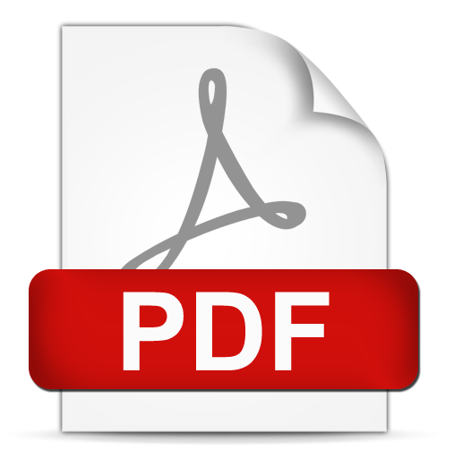

The 20th International Conference on Network and Service Management (CNSM) is inviting authors to submit original contributions in network and service management research. CNSM is a selective single-track conference, covering all aspects of the management of networks and services, pervasive systems, enterprises, and cloud computing environments. In particular, CNSM 2024 will focus on AI-Powered Network and Service Management for Tomorrow's Digital World.
Papers accepted and presented at CNSM 2024 will be published as open access on the conference website and will be submitted for possible publication in IEEE Xplore. Authors of selected papers accepted for publication in the CNSM 2024 proceedings will be invited to submit an extended version of their papers to the IEEE Transactions on Network and Service Management journal.
TPC Co-Chairs
Mauro Tortonesi, University of Ferrara, Italy
Tim Wauters, Ghent University - imec, Belgium
General Co-Chairs
Pál Varga, Budapest University of Technology and Economics, Hungary
Pavel Celeda, Masaryk University, Czech Republic
Please download the CNSM CFP flyer here: 